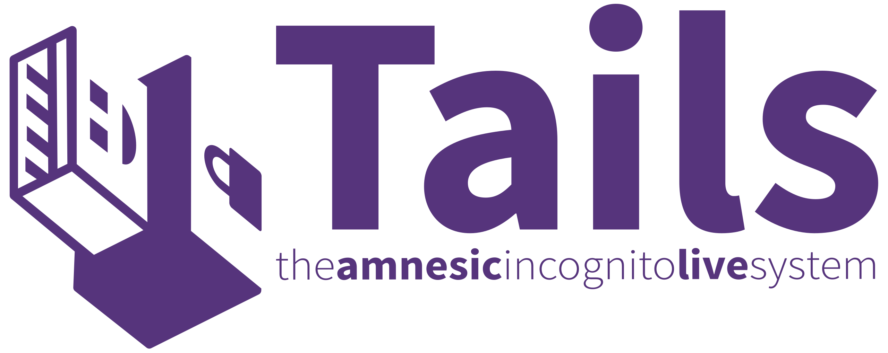

Windows 10
Windows 10 zbira različne vrste podatkov, da izboljša svojo funkcionalnost, prilagodi uporabniške izkušnje in zagotovi
ustrezne storitve. Zbrani podatki se lahko razvrstijo v več kategorij:
|
Parrot OS
Parrot OS je operacijski sistem, usmerjen v varnost, ki se osredotoča na zagotavljanje zasebnosti in anonimnosti svojim uporabnikom.
Eden od opaznejših zasebnostnih funkcij Parrot OS je AnonSurf.

|
|
Tails OS
Tails OS (The Amnesic Incognito Live System) je operacijski sistem, osredotočen na zasebnost, zasnovan za napredne varnostne in anonimnostne funkcije.
Tukaj so nekatere varnostne funkcije, ki jih ponuja Tails OS:
|  |
|